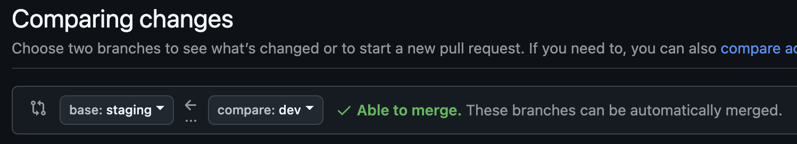
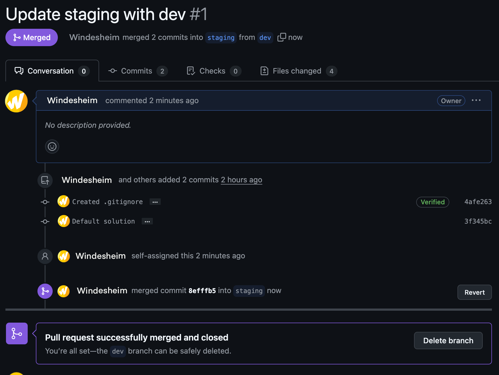
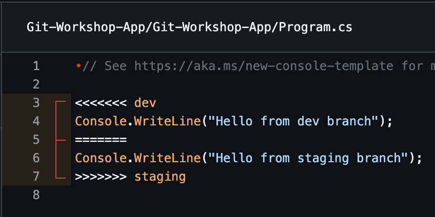
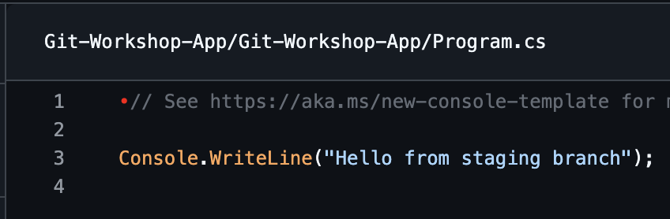

[!warning] Let op: Veel van wat we hier behandelen, zoals het maken van pull requests en het reviewen van code, is vooral nuttig in teamprojecten waar meerdere mensen samenwerken. In je eigen persoonlijke projecten zul je dit minder vaak nodig hebben. Toch is het belangrijk om deze concepten te begrijpen en ermee te oefenen, zodat je goed voorbereid bent op toekomstige samenwerkingen in een professionele omgeving.
In de vorige opdracht heb je een nieuwe branch (staging) gemaakt. Deze is up-to-date met de main branch, maar loopt enkele commits achter op de dev branch. Dat betekent dat de dev branch nieuwere versies van bestanden bevat dan de staging branch. Nu gaan we door middel van een pull request de staging branch ook up-to-date maken.
Stap 1: Open de geforkte repository op GitHub en navigeer naar het tabblad Pull Requests.
Stap 1.1: Klik op de groene knop New Pull Request.
Stap 1.2: Selecteer de door jou geforkte repository als base.
Stap 1.3: Kies base: staging, en compare: dev. Controleer of jouw situatie overeenkomt met de afbeelding hieronder.

Figuur 1: Branches voor het aanmaken van de pull request Stap 2: Klik op de groene knop Create Pull Request.Stap 2.1: Geef de pull request een naam en een beschrijving.
Voorbeeld: Update staging with dev.
Je kunt ook tags zoals Reviewers, Assignees, Labels, Projects, en Milestones toevoegen aan de pull request.
Stap 2.2: Klik nogmaals op de groene knop Create Pull Request. Nu bevind je je op de pagina van de pull request. Andere contributors kunnen hier de code bekijken die je wilt mergen, daarover meer in opdracht 3.
Stap 3: Klik op de groene knop Merge Pull Request.
Stap 3.1: Bevestig de merge door op Confirm Merge te klikken.
[!warning] Pas op! Verwijder de dev branch niet na het mergen en sluiten van de pull request!
[!success] Gelukt! Je hebt nu een pull request gemaakt om de dev branch met staging te mergen! Als alles goed is gegaan, zal de pagina er nu ongeveer zo uitzien:

> Figuur 2: Succesvol uitgevoerde pull request
In de vorige opdracht heb je een pull request gemaakt waarin er geen conflicten waren tussen bestanden. In deze opdracht gaan we bewust een conflict creëren en oplossen. Dergelijke conflicten, die optreden tijdens het samenvoegen van twee branches, worden merge conflicts genoemd.
Stap 1: Selecteer de dev branch als actieve branch via GitHub Desktop (of je IDE).
Stap 1.1: Open het project in de IDE (Visual Studio of Rider).
Stap 1.2: Pas in het bestand 00-variables de hostnames van de servers aan van “server1” en “server2” naar “vm1” en “vm2”.
Stap 1.3: Commit en push deze wijzigingen naar de dev branch.
[!info] Git in je code editor! Je kunt ook van branch wisselen binnen je IDE, zodat je niet steeds terug hoeft te gaan naar GitHub Desktop.
Stap 2: Selecteer de staging branch als actieve branch via GitHub Desktop (of je IDE) en zorg dat deze up-to-date is (Fetch & Pull changes via GitHub Desktop).
Stap 1.2: Pas in het bestand 00-variables de hostnames van de servers aan van “server1” en “server2” naar “machine1” en “machine2”.
Stap 2.2: Commit en push deze wijzigingen naar de staging branch.
Stap 3: Maak opnieuw een pull request (zie stappen 1 t/m stap 2.2 van opdracht 1). Je bent nu op de pagina van de pull request die je net hebt gemaakt.
Zoals je kunt zien, is het nu niet mogelijk om de pull request te mergen en te sluiten. Dit komt doordat dezelfde regel code in beide branches is aangepast, wat een merge conflict veroorzaakt.
Stap 3.1: Klik op de knop Resolve Conflicts. Je kunt nu de conflicten oplossen. Aangezien we willen mergen naar de staging branch, zorg ervoor dat de tekst in de WriteLine functie “Hello from Staging Branch” blijft.
Before Conflict:

Figuur 3: Situatie voor het conflictAfter Resolving Conflict:

Figuur 4: Sitautie na het oplossen van het conflictStap 3.2: Klik op de knop Mark as resolved.
Stap 3.3: Klik op de knop Commit merge.
Stap 3.4: Klik op de knop Merge pull request.
[!info] Pull requests in GitHub Dekstop Je kunt pull requests ook openen en beheren via GitHub Desktop. Navigeer daarvoor naar het tabblad Pull Requests onder het branch-kopje.
[!success] Top! Je hebt nu succesvol de merge conflicts opgelost en de pull request gesloten. Goed bezig!
In deze opdracht gaan we een pull request maken van de staging branch naar de main branch. Vervolgens leer je hoe je pull requests kunt reviewen, zodat je samen met andere teamleden kunt controleren of de voorgestelde wijzigingen klaar zijn om samengevoegd te worden.
Stap 1: Open je repository op GitHub en navigeer naar het tabblad Pull Requests.
Stap 1.1: Klik op de groene knop New Pull Request.
Stap 1.2: Selecteer staging als de compare branch en main als de base branch. Controleer of de branches correct zijn geselecteerd.
Stap 1.3: Klik op de knop Create Pull Request.
Stap 1.4: Geef de pull request een titel, bijvoorbeeld: Merge staging into main. Voeg een beschrijving toe waarin je de belangrijkste wijzigingen beschrijft.
Stap 1.5: Klik op de knop Create Pull Request.
Nu het pull request is aangemaakt, kunnen we de wijzigingen reviewen. Je leert hoe je opmerkingen kunt plaatsen, wijzigingen kunt goedkeuren of afwijzen, en hoe je feedback kunt geven.
Stap 2: Open de aangemaakte pull request.
Stap 2.2: Klik op de knop Files changed om de gewijzigde bestanden te bekijken.
[!info] Changed files Hier kun je precies zien welke regels code zijn veranderd. Je kunt opmerkingen plaatsen bij specifieke regels code.
Stap 2.3: Klik op de knop Review changes. Je hebt nu de optie om een review te doen: • Comment: Plaats opmerkingen zonder de pull request te accepteren of af te wijzen. • Approve: Accepteer de wijzigingen en geef goedkeuring om te mergen. • Request changes: Vraag om aanpassingen voordat de pull request kan worden gemerged.
Stap 2.4: Kies een reviewoptie (bijvoorbeeld Approve) en voeg een commentaar toe als feedback voor het team.
Stap 2.5: Klik op Submit Review om je review in te dienen.
Nadat de review is goedgekeurd, kunnen we het pull request mergen naar de main branch.
Stap 3: Klik op de knop Merge pull request.
Stap 3.1: Bevestig de merge door op Confirm Merge te klikken.
[!warning] Let op! Verwijder de staging branch niet na het mergen. Deze blijft in gebruik voor verdere ontwikkelingswerkzaamheden.
[!success] Gelukt
- Je hebt een pull request gemaakt!
- Je hebt merge conflicts opgelost!
- Je hebt een pull request gereviewd!